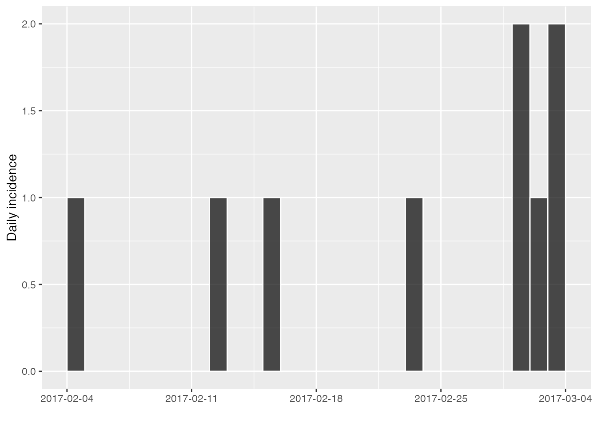
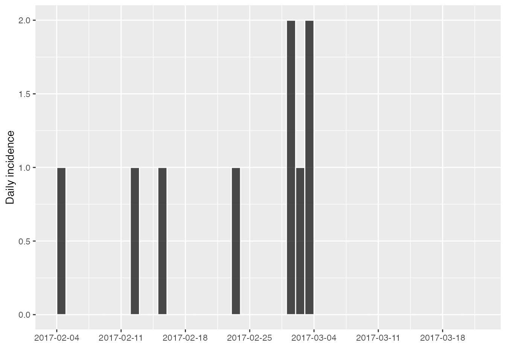
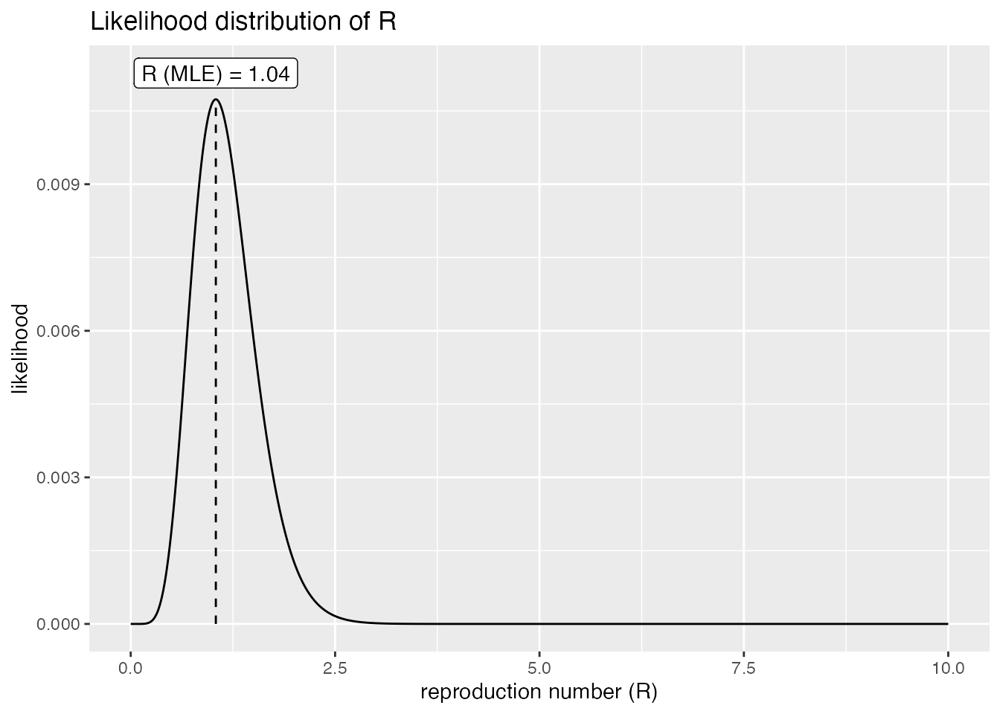
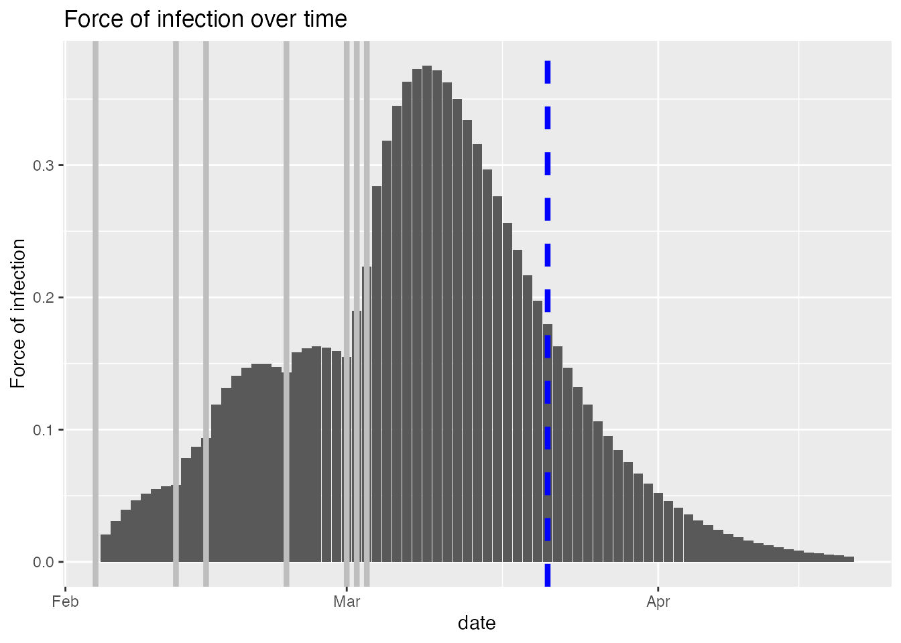
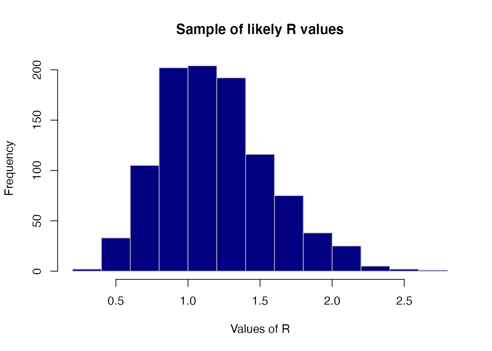
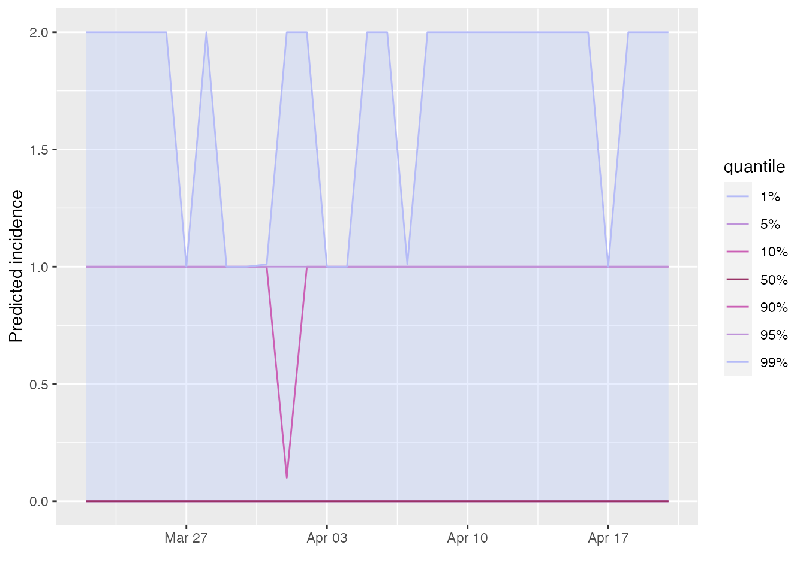
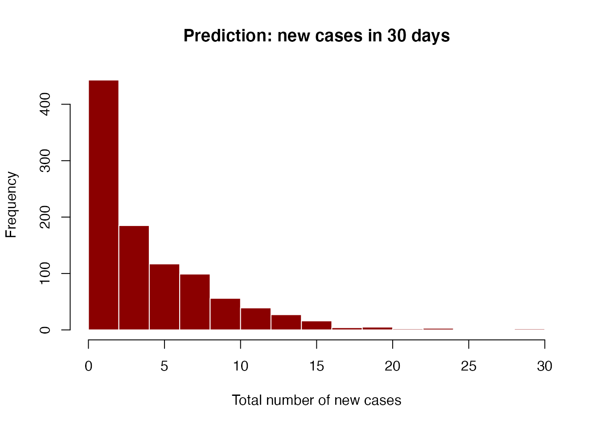
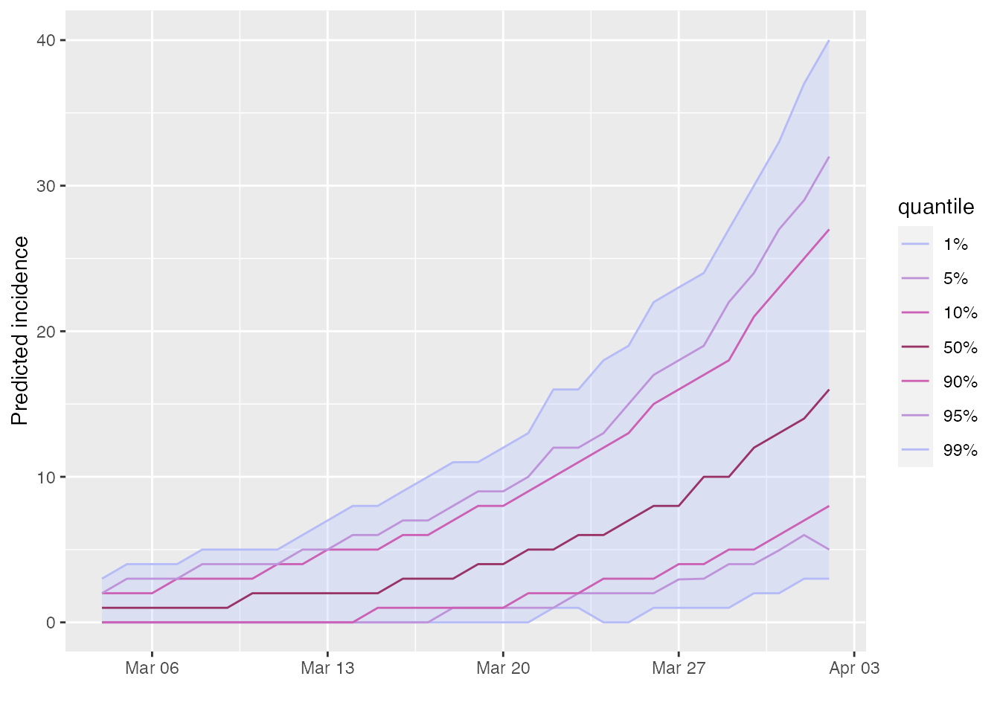
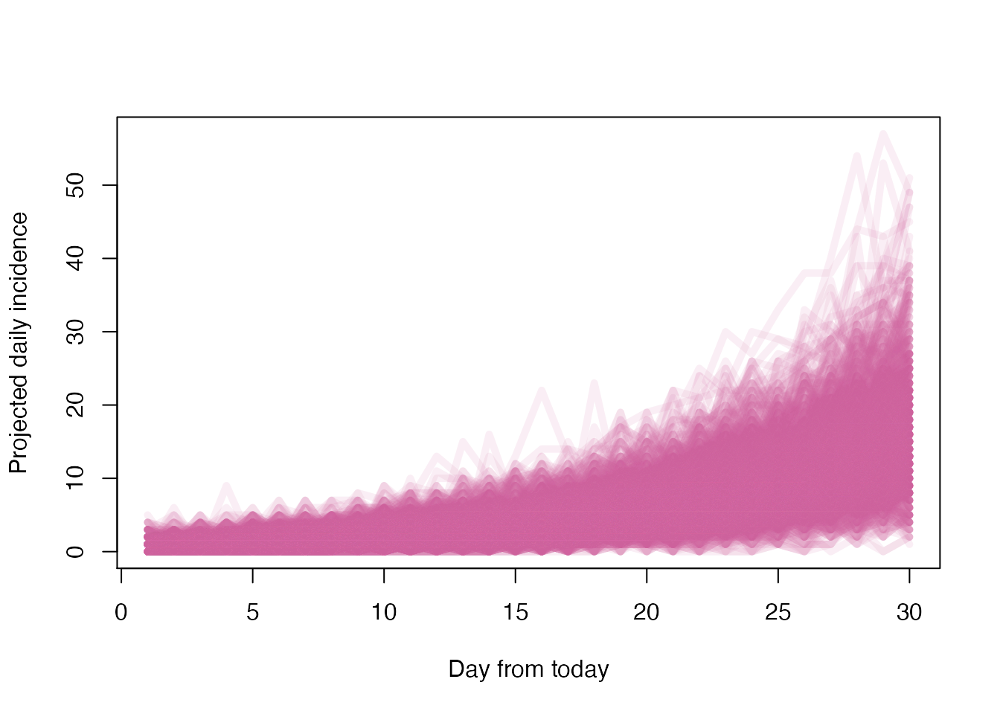
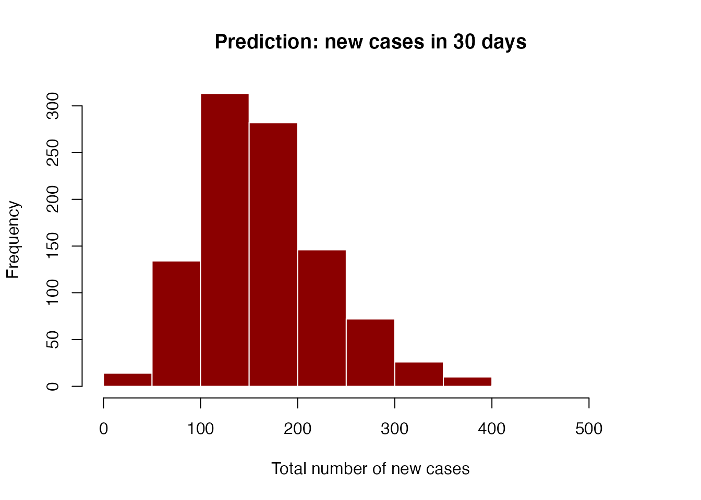

In this example we assume a small outbreak of Ebola Virus Disease (EVD), for which the serial interval has been previously characterised. We study a fake outbreak, for which we will quantify infectiousness (R), and then project future incidence using the package projections.
The fake data we consider consist of confirmed cases with the following symptom onset dates:
onset <- as.Date(c("2017-02-04", "2017-02-12", "2017-02-15", "2017-02-23", "2017-03-01", "2017-03-01", "2017-03-02", "2017-03-03", "2017-03-03"))
We compute the daily incidence using the package incidence:
library(incidence) i <- incidence(onset) i #> <incidence object> #> [9 cases from days 2017-02-04 to 2017-03-03] #> #> $counts: matrix with 28 rows and 1 columns #> $n: 9 cases in total #> $dates: 28 dates marking the left-side of bins #> $interval: 1 day #> $timespan: 28 days #> $cumulative: FALSE plot(i, border = "white")

Notice that the epicurve stops exactly after the last date of onset. Let us assume it is currently the 21th March, and no case has been seen since the 6th March. We need to indicate this to incidence using:
today <- as.Date("2017-03-21") i <- incidence(onset, last_date = today) i #> <incidence object> #> [9 cases from days 2017-02-04 to 2017-03-21] #> #> $counts: matrix with 46 rows and 1 columns #> $n: 9 cases in total #> $dates: 46 dates marking the left-side of bins #> $interval: 1 day #> $timespan: 46 days #> $cumulative: FALSE plot(i, border = "white")

It is very important to make sure that the last days without cases are included here. Omitting this information would lead to an over-estimation of the reproduction number (R).
For estimating R, we need estimates of the mean and standard deviation of the serial interval, i.e. the delay between primary and secondary symptom onset dates. This has been quantified durin the West African EVD outbreak (WHO Ebola Response Team (2014) NEJM 371:1481–1495):
mu <- 15.3 # mean in days days sigma <- 9.3 # standard deviation in days
The function get_R is then used to estimate the most likely values of R:
library(earlyR) library(ggplot2) res <- get_R(i, si_mean = mu, si_sd = sigma) res #> #> /// Early estimate of reproduction number (R) // #> // class: earlyR, list #> #> // Maximum-Likelihood estimate of R ($R_ml): #> [1] 1.041041 #> #> #> // $lambda: #> NA 0.01838179 0.0273192 0.03514719 0.0414835 0.04623398... #> #> // $dates: #> [1] "2017-02-04" "2017-02-05" "2017-02-06" "2017-02-07" "2017-02-08" #> [6] "2017-02-09" #> ... #> #> // $si (serial interval): #> A discrete distribution #> name: gamma #> parameters: #> shape: 2.70655567117586 #> scale: 5.65294117647059 plot(res)

plot(res, "lambdas", scale = length(onset) + 1) + geom_vline(xintercept = onset, col = "grey", lwd = 1.5) + geom_vline(xintercept = today, col = "blue", lty = 2, lwd = 1.5) #> Warning: Removed 1 rows containing missing values (position_stack).

The first figure shows the distribution of likely values of R, and the Maximum-Likelihood (ML) estimation. The second figure shows the global force of infection over time, with vertical grey bars indicating the dates of symptom of onset. The dashed blue line indicates current day.
Based on this figure and on the estimated R, we can wonder if new cases will be seen in the near future. How likely is this? We can use the package projections to have an idea. The function project can be used to simulate a large number of future epicurves which are in line with the current data, serial interval and R. Rather than using a single ML estimate of R (as we can see, there is some variability in the distribution), we use a sample of 1,000 likely R values using sample_R:
R_val <- sample_R(res, 1000) summary(R_val) #> Min. 1st Qu. Median Mean 3rd Qu. Max. #> 0.3504 0.9209 1.1512 1.1903 1.4114 2.7127 quantile(R_val) #> 0% 25% 50% 75% 100% #> 0.3503504 0.9209209 1.1511512 1.4114114 2.7127127 quantile(R_val, c(0.025, 0.975)) #> 2.5% 97.5% #> 0.5705706 2.0422923 hist(R_val, border = "grey", col = "navy", xlab = "Values of R", main = "Sample of likely R values")

We retrieve the serial interval (SI) from res: distcrete.
si <- res$si si #> A discrete distribution #> name: gamma #> parameters: #> shape: 2.70655567117586 #> scale: 5.65294117647059
We now use project to simulate future epicurves:
library(projections) future_i <- project(i, R = R_val, n_sim = 1000, si = res$si, n_days = 30) future_i #> #> /// Incidence projections // #> #> // class: projections, matrix, array #> // 30 dates (rows); 1,000 simulations (columns) #> #> // first rows/columns: #> [,1] [,2] [,3] [,4] [,5] [,6] #> 2017-03-22 0 0 0 0 0 0 #> 2017-03-23 0 0 0 0 0 0 #> 2017-03-24 0 0 0 0 1 1 #> 2017-03-25 0 0 0 0 0 0 #> . #> . #> . #> #> // dates: #> [1] "2017-03-22" "2017-03-23" "2017-03-24" "2017-03-25" "2017-03-26" #> [6] "2017-03-27" "2017-03-28" "2017-03-29" "2017-03-30" "2017-03-31" #> [11] "2017-04-01" "2017-04-02" "2017-04-03" "2017-04-04" "2017-04-05" #> [16] "2017-04-06" "2017-04-07" "2017-04-08" "2017-04-09" "2017-04-10" #> [21] "2017-04-11" "2017-04-12" "2017-04-13" "2017-04-14" "2017-04-15" #> [26] "2017-04-16" "2017-04-17" "2017-04-18" "2017-04-19" "2017-04-20" mean(future_i) # average incidence / day #> [1] 0.1446333 plot(future_i)

The plot shows the median (plain) and 95% credible interval of incidences. Here, this means most simulations have no new cases. This is likely due to the fact that no case have been seen for the last few days - this would not be compatible with ongoing growth of the epidemic. To have the distribution of the total number of new cases predicted in the next 30 days, we can use:
predicted_n <- colSums(future_i) summary(predicted_n) #> Min. 1st Qu. Median Mean 3rd Qu. Max. #> 0.000 1.000 3.000 4.339 7.000 29.000 hist(predicted_n, col = "darkred", border = "white", main = "Prediction: new cases in 30 days", xlab = "Total number of new cases")

Note that without the recent zero incidence, results would be drastically different:
alt_i <- incidence(onset) alt_res <- get_R(alt_i, si_mean = mu, si_sd = sigma) alt_R_val <- sample_R(alt_res, 1000) alt_future_i <- project(alt_i, R = alt_R_val, n_sim = 1000, si = res$si, n_days = 30) alt_future_i #> #> /// Incidence projections // #> #> // class: projections, matrix, array #> // 30 dates (rows); 1,000 simulations (columns) #> #> // first rows/columns: #> [,1] [,2] [,3] [,4] [,5] [,6] #> 2017-03-04 0 0 0 1 1 0 #> 2017-03-05 3 0 1 2 1 2 #> 2017-03-06 0 0 3 1 1 2 #> 2017-03-07 0 0 1 1 0 3 #> . #> . #> . #> #> // dates: #> [1] "2017-03-04" "2017-03-05" "2017-03-06" "2017-03-07" "2017-03-08" #> [6] "2017-03-09" "2017-03-10" "2017-03-11" "2017-03-12" "2017-03-13" #> [11] "2017-03-14" "2017-03-15" "2017-03-16" "2017-03-17" "2017-03-18" #> [16] "2017-03-19" "2017-03-20" "2017-03-21" "2017-03-22" "2017-03-23" #> [21] "2017-03-24" "2017-03-25" "2017-03-26" "2017-03-27" "2017-03-28" #> [26] "2017-03-29" "2017-03-30" "2017-03-31" "2017-04-01" "2017-04-02" mean(alt_future_i) #> [1] 5.5434 plot(alt_future_i)

## alternative plot col <- "#cc66991a" matplot(alt_future_i, type = "l", col = col, lty = 1, lwd = 5, xlab = "Day from today", ylab = "Projected daily incidence")

alt_predicted_n <- colSums(alt_future_i) summary(alt_predicted_n) #> Min. 1st Qu. Median Mean 3rd Qu. Max. #> 18.0 118.0 159.0 166.3 203.2 512.0 hist(alt_predicted_n, col = "darkred", border = "white", main = "Prediction: new cases in 30 days", xlab = "Total number of new cases")
